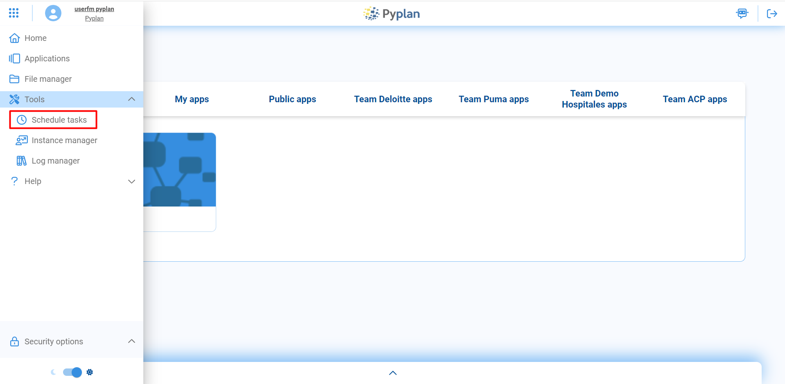
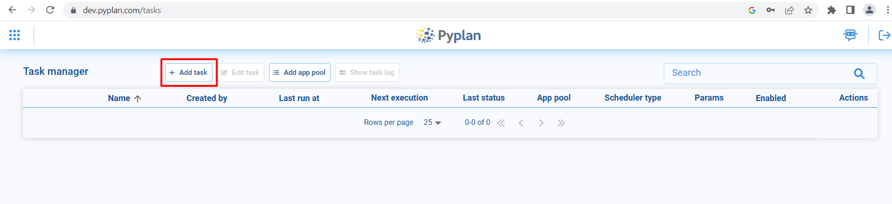
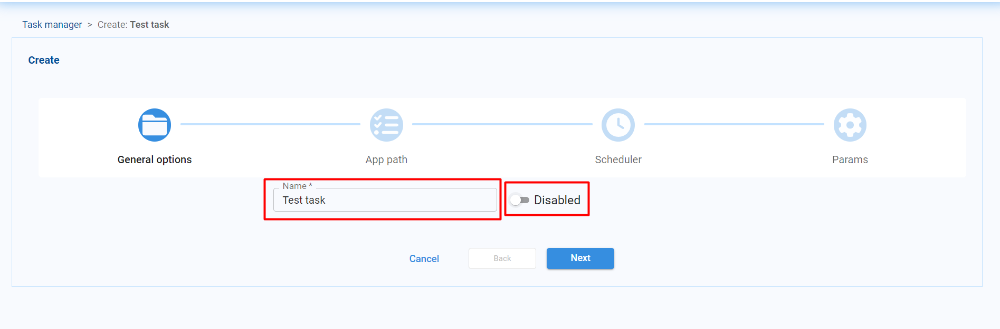
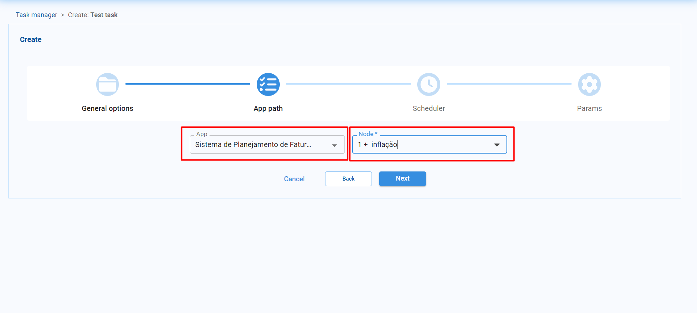
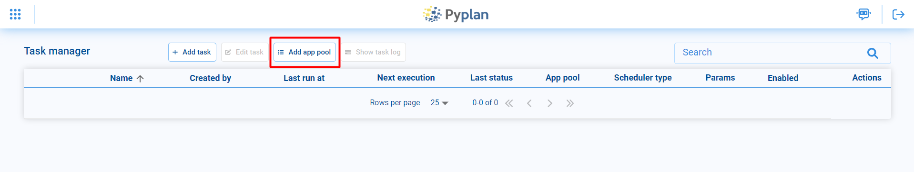
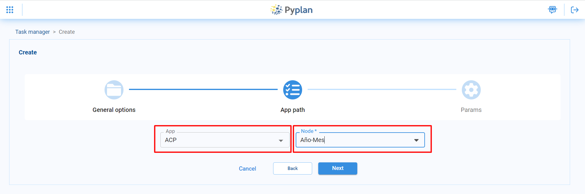
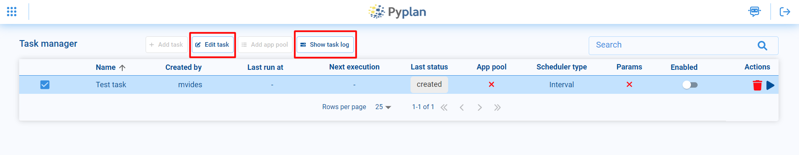
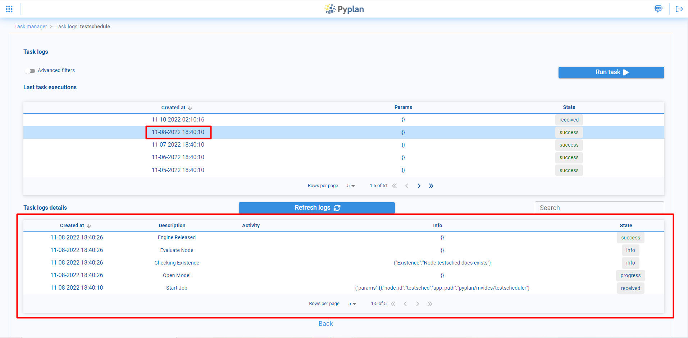

Scheduled tasks
Contents
Scheduled tasks#
Pyplan has a task manager to schedule activities automatically. This tool is available in the left sidebar, under the Tools menu, in the Schedule tasks option.
Tasks#
To create a scheduled task, select the Add task option at the top.
Then the task creation menu opens. In the General options part you can choose a name for the task and indicate whether the task will be enabled or not.
Then, in the App path option, select the application and the corresponding node to be executed with the scheduled task.
In the Scheduler option you can select the periodicity of execution of the task. There are 3 options available
Interval: Allows the task to be executed every certain time interval, for example, every day or every hour.
Custom: Free to schedule the execution of the task, you can select the time or days of the week you want it to be executed
Clocked: To run the task on a specific day and time.
Finally, in the Params section, if the node to be executed in the scheduled task is a function that depends on certain parameters, these parameters can be specified at the time of execution.
Select: Allows you to select the parameters from a predefined list.
Input: Allows the user to enter the value of the parameter.
Checkbox: The user will be able to enter parameters that can take True or False values through a checkbox.

Finally you can see the task created in the task manager, where you can also monitor its execution, enable/disable, edit or delete our task, among other things.

App pool#
An app pool is a tool that allows you to run a node of an application and make it available for other users to access it and continue working once the corresponding node has finished running. To create an app pool, select the Add app pool option at the top.
In the General options section you can choose a name for the app pool and you have the possibility to choose whether you want the app pool to be available to all users or only to a particular user. You can also set how many instances of the app will be available for use. Finally, you can also specify an expiration date for the instances, if necessary.

As with the scheduled tasks, in the App path option you must select the application and the corresponding node to be executed.
In the Params section, if the node to be executed in the app pool is a function that depends on certain parameters, these parameters can be specified at the time of execution.
Select: Allows you to select the parameters from a predefined list.
Input: Allows the user to enter the value of the parameter.
Checkbox: The user will be able to enter parameters that can take True or False values through a checkbox.

Edit and view logs#
If necessary, you can edit any of the tasks or app pool by selecting it and clicking on the Edit task option, where you can modify all the options that were selected at the time of creation.
You can also monitor the logs of the task/app pool from the Show task logs option, where you can see the last times it was executed and you can review the logs of the corresponding executions.
